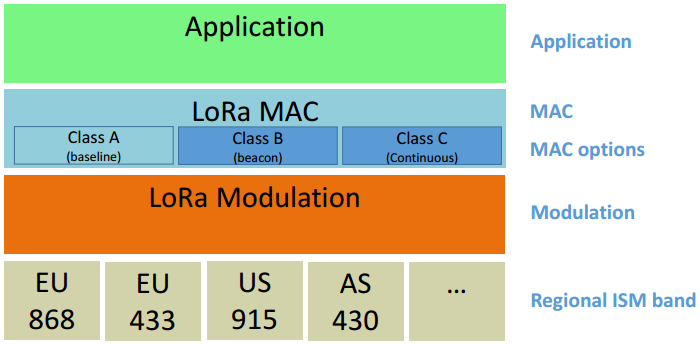

第2章 LoRaWAN Classes 类型介绍
LoRa 是由 Semtech 面向长距离、低功耗、低速率应用而开发的无线调制技术。本文档中，将 Class A 基础上实现了更多功能的设备称为“更高 class 终端”。
2.1 LoRaWAN Classes
LoRa网络包含基础 LoRaWAN (称之为 Class A) 和可选功能(Class B，Class C):
 图1.LoRaWAN Classes
双向传输终端(Class A)： Class A 的终端在每次上行后都会紧跟两个短暂的下行接收窗口，以此实现双向传输。终端基于自身通信需求来安排传输时隙，在随机时间的基础上具有较小的变化(即ALOHA协议)。这种Class A 操作为应用提供了最低功耗的终端系统，只要求应用在终端上行传输后的很短时间内进行服务器的下行传输。服务器在其他任何时间进行的下行传输都得等终端的下一次上行。
划定接收时隙的双向传输终端(Class B)： Class B 的终端会有更多的接收时隙。除了Class A 的随机接收窗口，Class B 设备还会在指定时间打开别的接收窗口。为了让终端可以在指定时间打开接收窗口，终端需要从网关接收时间同步的信标(Beacon)。这使得服务器可以知道终端何时处于监听状态。
最大化接收时隙的双向传输终端(Class C)： Class C 的终端基本是一直打开着接收窗口，只在发送时短暂关闭。Class C 的终端会比 Class A 和 Class B 更加耗电，但同时从服务器下发给终端的时延也是最短的。
2.2 文档范围
这份LoRaWAN协议还描述了与 Class A 不同的其他 Class 的额外功能。更高 Class 的终端必须满足 Class A 定义的所有功能。
注意：物理层帧格式，MAC 帧格式，以及协议中更高 class 和 Class A 相同的内容都写在了 Class A 部分，避免内容重复。